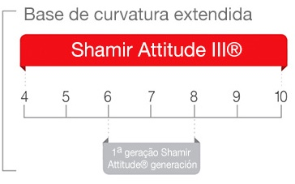
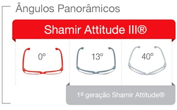

Shamir Attitude III® SV
Voltamos a ser pioneiros e lançamos a nova e revolucionária gama de lentes solares personalizadas Shamir Attitude III®. Com benefícios únicos para óculos de sol, as Shamir Attitude III® SV, incorporam a Eye Point Technology®™ , que optimiza a experiência visual independentemente da prescrição ou da escolha da armação.
A Shamir Attitude III® SV assegura um conforto visual extremo para qualquer armação, plana ou curva, e para qualquer estilo de vida ou atividade ao ar livre.
Shamir Attitude III® SV - A solução perfeita para qualquer armação
• Excelente estabilidade do design ótico em toda a lente
• Visão periférica alargada
Base de curvatura extendida
Base de Curvatura e angulo Panorâmico
A Shamir Attitude III® é a única gama de lentes solares que permite graduar óculos de sol de todas as bases de curvatura, desde as mais planas às ergonómicas muito curvas e personalizá-los com uma geometria em função da utilização que o portador lhes vai dar.
 